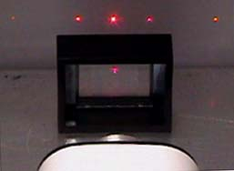

Diffraction Grating
When there is a need to separate light of different wavelengths with high resolution, then a diffraction grating is most often the tool of choice. This "super prism" aspect of the diffraction grating leads to application for measuring atomic spectra in both laboratory instruments and telescopes. A large number of parallel, closely spaced slits constitutes a diffraction grating. The condition for maximum intensity is the same as that for the double slit or multiple slits, but with a large number of slits the intensity maximum is very sharp and narrow, providing the high resolution for spectroscopic applications. The peak intensities are also much higher for the grating than for the double slit.
|

|
When light of a single wavelength , like the 632.8nm red light from a helium-neon laser at left, strikes a diffraction grating it is diffracted to each side in multiple orders. Orders 1 and 2 are shown to each side of the direct beam. Different wavelengths are diffracted at different angles, according to the grating relationship.
|
|
Index
Grating concepts
Diffraction concepts |